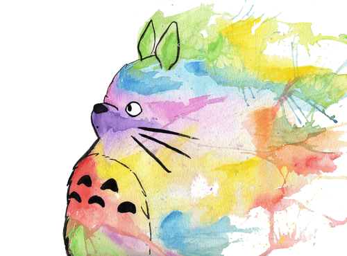

'Twas brilling and the slithy toves did gyre and gambol in the wabe. All mimsy were the borogroves and the mome rathes outgrabe.
"Beware the Jabberwock, my son! The jaws that bite, the claws that catch. Beware the Jub Jub Bird and shun the frumious Bandersnatch!" He took his vorpal sword in hands, long time the manxsome foe he sought, so rested he by the tum tum tree and stood a while in thought. And as in uffish thought he stood, the Jabberwock with eyes of flame came whiffling through the tulgy wood and burbled as it came!
One-two, one-two, and through and through the vorpal blade went snicker-snack! He left it dead and with its head he went gallumphing back. "And hast though slain the Jabberwock! Come to my arms, my beamish boy! O Frabjous day! Calloo, Callay!" he chortled in his joy.
'Twas brilling and the slithy toves did gyre and gambol in the wabe. All mimsy were the borogroves and the mome rathes outgrabe.